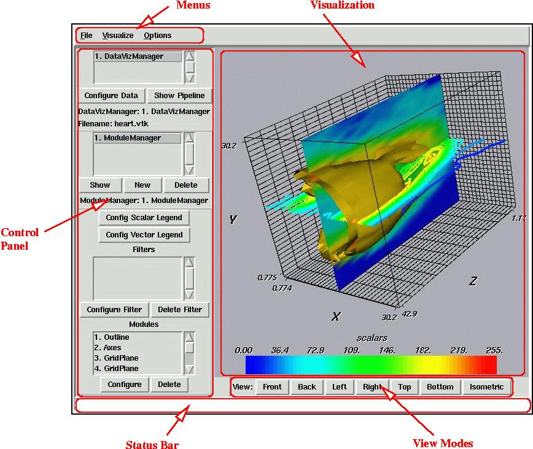

MayaVi provides an easy to use GUI. The picture shown below shows the basic GUI that MayaVi provides. The regions marked out in red are to be noted. The top left shows a set of menus. Below the menus is a control panel on the left and the actual visualization on the right. At the bottom of the application window is a status bar that turns red when MayaVi is busy doing something. In between the status bar and the visualization are provided a set of buttons that help control the visualization view.
|  |
The MayaVi Window
Each section of the screen marked and described above provides important functionality.
This provides a set of menus from which provide the user with bulk of the functionality.
This part of the screen is where the data is visualized using VTK.
The control panel allows the user to configure and control the particular visualization. It provides various lists for the user's convenience. These are discussed in detail subsequently.
This part of the screen indicates the status of MayaVi to the user. If MayaVi is busy doing something this part of the screen will turn red and the cursor will change to a watch indicating that MayaVi is busy.
These are a set of convenience buttons that help the user quickly see one particular view of the visualization.
The next chapter deals with using MayaVi.